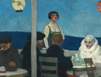

* 무료입장/특별요금/특별할인은 현장 매표소에서 증빙서류 확인 후 티켓 구매 및 발권 가능합니다. (증빙서류 필참)
* 할인은 다둥이 행복카드만 할인 가능 합니다. (중복할인 불가)
* 복지카드 분실 시 장애인 증명서로 대체 가능합니다.
예매 안내
- 권종(성인 / 청소년 / 어린이) 구분 없이 1회당 최대 4매 예매 가능합니다.
- 특별요금 대상자는 예매 후 현장 매표소에서 증빙서류를 확인하여 티켓 수령이 가능합니다.
- 본 전시는 관람 시간 지정 예약제로 운영되며, 관람 일자 및 관람 시간 지정 후 예매 가능합니다. (30분 단위로 회차 구분)
- 입장 마감 시간은 선택하신 관람 시간부터 30분까지 입니다.
(예. 11시 회차 티켓 구매 시, 11시부터 11시 30분까지 입장 가능 / 11시 이전과
11시 30분 이후 시간 입장 불가)
- 20인 이상의 단체 관람은 단체 예약 번호 (1588-8416)로 문의 주시기 바랍니다.
- 1명이 여러 명의 티켓을 함께 예매할 경우, 예매한 관람 시간에 동반 입장해야 합니다.
- 온라인 티켓 판매 수량 매진 시 현장에서도 티켓 구매가 가능합니다.
취소 및 환불 안내
- 온라인 예매의 취소 및 환불은 관람 지정일 전일 오후 5시까지 해당 예매처에서 가능합니다.
(현장 매표소에서 취소 및 환불 불가 / 수수료는 예매처 기준에 따름)
- 관람 당일 취소 및 환불은 불가 합니다.
- 관람 일자가 지난 티켓은 사용 불가 합니다.
입장 안내
- 모바일티켓을 소지하신 경우 전시실 입구에서 QR 입장권 인식 후 입장 팔찌를 수령하여 입장합니다.
- 1명이 여러 명의 티켓을 예매한 경우, 전체 인원이 함께 입장해야 합니다.
관람 안내
- 사진 촬영은 1층 전시실 일부에 한해 가능합니다. (영상촬영 및 플래쉬 사용 불가)
- 전시실 내 음료를 포함한 음식물 일체의 섭취 및 반입이 불가합니다.
- 캐리어, 우산, DSLR, 삼각대, 셀카봉, 꽃 등 반입불가 물품은 미술관 지하 1층 무료사물함 또는 1층 안내데스크에 보관 후
입장해주세요.
- 모두의 조용하고 쾌적한 관람을 위하여 미술관이 제공하는 교육 프로그램 및 도슨팅 이외의 전시장 내 해설 활동 자제를 권고드립니다.
* 미술관 2층 오디오가이드 기기 대여 3,000원 (현장문의) / 가이드온 스마트폰 어플 유료 다운로드 3,000원
전시 안내
전시기획의 글
서울시립미술관(SeMA)은 해외 유수의 미술 기관과 협력하여 세계적 명화를 소개하는 ‘해외소장품 걸작전’의 일환으로 ≪에드워드 호퍼: 길 위에서 Edward
Hopper:
From City to Coast≫를 개최한다. 본 전시는 서울시립미술관과 뉴욕 휘트니미술관이 공동 기획한 작가의 첫 국내 개인전이다. 에드워드
호퍼(Edward
Hopper, 1882-1967)는 20세기 초 현대인이 마주한 일상과 정서를 독자적인 시각으로 화폭에 담아낸 대표적인 현대미술 작가이다. 시공을 초월하는
예술성을
지닌
그의 작품은 오늘날까지 미술을 포함한 문화 전반에 지대한 영향을 미치며 세계적인 인기를 누리고 있다.
지난 2020년 영국 『가디언』지는 「오늘날 우리는 모두 에드워드 호퍼의 그림이다. 그는 코로나바이러스 시대의 예술가인가?」라는 기사를 게재한다. 고립,
단절,
소외의
정서가 만연한 오늘날에 1900년대 초 미국 작가인 호퍼가 재조명 받는 이유는 무엇일까? “위대한 예술이란 예술가의 내면의 삶을 밖으로 표현한 것”이라는
호퍼의
말처럼,
과묵했던 그에게 그림은 세상에 대한 속마음을 드러내는 작가만의 화법이다. 그의 시선은 누구도 주목하지 않고 “무관심으로 흘려버리는” 평범한 것에 머물고,
대상과
공간을
세심히 관찰하여 포착된 현실은 호퍼 특유의 빛과 그림자, 대담한 구도 그리고 시공간의 재구성 등을 통해 자기화된다. 이런 의미에서 호퍼의 그림은 풍경 너머
내면의
자화상이라고 할 수 있고 그 모습은 우리와 닮아 있다. 그것이 창문 너머 누군가의 뒷모습뿐만 아니라 마천루와 대비되는 낮은 건물의 지붕, 철로 위를 비추는
석양일지라도
말이다. ≪에드워드 호퍼: 길 위에서≫는 파리, 뉴욕, 뉴잉글랜드 일대, 케이프코드 등 작품 속에 작가의 자취가 고스란히 남아 있는 장소를 따라, 도시의
일상에서
자연으로
회귀를
거듭하며 예술적 지평을 넓혀간 호퍼의 65년에 이르는 화업을 돌아본다. 전시 제목 ‘길 위에서’는 호퍼가 그 장소로 향하는 길이자, 그곳에서 호퍼다운 화법을
전개하고,
각각이 이어져 독보적인 예술이 되어가는 모습, 나아가 그 길 위에서 우리가 호퍼를 조우하는 순간을 상징한다.
본 전시에서는 그의 전 생애에 걸친 드로잉, 판화, 유화, 수채화 등 작품과 산본 호퍼 아카이브(Sanborn Hopper Archive)의 자료 270여
점을 8개
섹션으로 나누어 작가의 삶과 작품세계를 충실히 조망한다. 흔히 호퍼라 하면 현대인의 고독을 다룬 작품을 떠올리지만, 그가 걸어온 길은 다채롭고 심오하다.
“내게 가장
중요한
것은 계속되어 간다는 느낌입니다. 여행을 하고 있을 때 사물들이 얼마나 아름답게 보이는지, 당신도 잘 알겠지요.”라는 작가의 말에서 알 수 있듯이, 그는 여러
장소에
대한
특유의 감수성을 바탕으로 섬세한 관찰에 자신만의 기억과 상상력을 더한 화풍을 평생에 걸쳐 발전시켰다. 이번 전시가 에드워드 호퍼에 대한 이해를 넓히고, 그의
작품이
여러모로
지친 우리에게 공감과 위안을 주기를 기대한다.
에드워드 호퍼
1882년 뉴욕주 나이액에서 태어난 호퍼는 그림과 문학을 즐기며 성장한다. 부모의 권유로 1899년 실용미술 위주의 뉴욕일러스트레이팅학교에 진학하나, 이듬해
뉴욕예술학교로
편입하여 20세기 전반 미국 사실주의 화단을 이끈 로버트 헨라이 등의 수업을 들으며 예술가의 꿈을 이어간다.
호퍼의 삶과 궤를 함께하는 자화상과 일련의 작품들은 크게 세 시기로 나뉜다. 1900년 초 학생 시절에는 얼굴과 상반신, 특히 손을 수차례 그리는데, 예술적
표현과
기술적
숙련을 위한 노력, 성공에 대한 열망을 느낄 수 있다. 상업 화가에서 전업 작가로 나아가는 과도기인 1910-1920년대의 자화상에서는 예술가로서의 자아
성찰적
측면이
부각된다. 극장을 가거나 야외 작업을 다니며 애용하던 중절모와 에칭프레스기가 본인의 상징물로 등장하며, 직업적 자의식이 안팎으로 영감을 얻으며 성장하는 면모가
드러난다.
이후 예술가로서 역량과 명성이 무르익은 1940년대에도 자화상과 손 그리기를 반복하여 세밀한 근육의 묘사, 명암의 사용 등에 있어 끊임없는 자기 계발을
시도했음을
보여준다.
허드슨강 인근의 나이액 고향 집은 예술가의 꿈을 키우고, 문명과 자연의 대비라는 주제적 관심을 형성해 나가는 데 중요한 배경이 된다. 자화상, 스케치, 책,
노트
등이
보이는 ≪나이액 예술가의 침실≫(1905-1906년경)은 예술가로서 자아를 형성한 침실 공간을 배경으로 한다. 역시 나이액의 집을 떠올리며 작업한 후기작
〈계단〉(1949)의 구도는 문명의 상징적 공간인 집에서부터 수풀이 우거진 문밖 미지의 풍경으로 시선을 이끈다. 그의 작품에서 숲은 종종 문명의 대척점으로서
해석되어
왔으며, 계단, 창문, 현관문 등의 모티프는 안과 밖을 경계 짓고 양자 간의 시선 이동을 유도하며 상상을 촉발시킨다.
파리
1906년 뉴욕에서 삽화가로 일을 시작한 호퍼는 예술가의 꿈을 안고 당대 예술의 수도로 여겨졌던 파리로 향한다. 도시화로 인해 끝없는 개발이 반복되는 뉴욕과
달리 옛
모습을
간직한 파리의 매력에 빠진 호퍼는 1906년에서 1910년 사이 3회에 걸쳐 파리에 체류한다. 그는 자율적으로 파리와 근교의 거리로 나가 자연과 건축물,
사람들을
면밀히
관찰하며 시간을 보내고, 주변 유럽 도시를 여행하며 거장들의 작품을 관람한다.
새로운 환경에서 소재와 영감을 찾는 시도를 통해 호퍼의 작품은 매 방문마다 점진적으로 변화한다. 첫해인 1906년에는 여전히 스승 로버트 헨라이의 영향
아래에서 그가
지내던
침례교 교회 건물 내부와 주변 도시 풍경을 고동색과 짙은 회색 등의 어두운 색조로 표현한다. 전위적인 야수파와 큐비즘 대신 빛의 효과를 강조하는 인상주의
화풍에
영향을 받은
호퍼는 1907년부터 더욱 적극적으로 야외 작업에 임한다. ‘센강과 강변-건물-하늘’이 반복적으로 등장하는 화폭은 밝은 톤, 빠른 붓 터치, 부드러운 빛을
머금기
시작하고
수평 구도를 시도하며 캔버스의 크기도 변화한다. 1909년의 작업에서는 센강변의 강둑, 루브르박물관, 다리와 같은 건축적 요소와 빛과 그림자의 대비가 부각되고
사진
프레임
안에 담은 듯한 구도가 나타나 호퍼만의 화풍이 구축되기 시작했음을 느낄 수 있다.
야외 작업에 익숙해진 호퍼는 파리지앵의 일상을 관찰하기 시작한다. 아침부터 밤까지 내내 생동감 넘치는 파리의 풍경은 그에게 흥미로운 소재였고, 다양한 직업군,
카페에
앉아
있는 사람들, 유행하는 옷을 입은 남녀 등을 33점의 수채화 캐리커처로 기록한다. 이후 파리의 일상에 대한 관찰과 인물 묘사는 ≪비스트로 또는 와인
가게≫(1909)와
≪푸른 저녁≫(1914)에서 구체화된다. 뉴욕에서 완성된 두 작업은 실제적인 관찰에 기초한 구성에서 출발하되 기억과 상상력이 더해지며 완성되는 호퍼의
리얼리즘적
특성이
본격화되는 초기 사례로서 중요하다. 그중 ≪푸른 저녁≫은 파리의 카페를 배경으로 왼쪽의 노동자, 중앙의 광대와 매춘부 그리고 담배 피우는 예술가, 오른편의
부르주아
남녀 등
다양한 인물 군상을 보여준다.
마지막 파리 방문 이후 4년이 지나 뉴욕에서 그린 이 작업은 인물들의 단절적 관계와 심리적 풍경 묘사라는 그의 성숙기 회화의 속성을 드러낸다는 점에서도 주목할
필요가
있다.
하지만 이 작품은 1915년 뉴욕 맥도웰클럽 출품 시 혹평을 받았다. 미국 내에서 독자적인 미술을 전개하려는 움직임으로 인해 파리가 아닌 뉴욕의 풍경을 원하는
분위기가
커졌기 때문이다. 세 번의 유럽 방문을 마치고 본격적으로 뉴욕에 정착한 호퍼는 이를 계기로 미국적 풍경을 담기 위한 시도를 거듭한다.
뉴욕
“에칭을 시작한 뒤부터 내 그림은 구체화되어 가는 듯했다.”
생계를 위해 선택한 삽화가로서의 현실 속에서 예술가의 꿈을 놓지 않았던 호퍼는 어린 시절부터 즐기던 드로잉처럼 선이 강조되는 판화 기법 에칭을 1915년
시도한다.
그는
1916년 에칭프레스를 구입한 뒤로 1928년까지 당대 뉴욕의 면면을 담은 약 70점의 판화를 제작한다. 그의 에칭은 뉴욕의 주택가와 고층 건물, 북적이는
번화가의
풍경을
생생하고 거친 선으로 표현하고, 고가 전철과 철도 등 교통체계의 발달을 포착하며 폭발적인 인구 증가와 도시 개발이 본격화되던 당시의 분위기를 전달한다. 한편
도시를
밝히는
불빛과 텅 빈 거리, 실내의 인물 역시 에칭의 주된 주제였으며, 이러한 작업은 빛과 그림자의 효과를 연구하고 이후 회화 작업과 연결되는 주제 선정, 구도,
표현법의
초석을
마련한다. 실제로 호퍼의 에칭은 화단의 호평을 받으며, 그가 예술가로서 입지를 다지게 되는 결정적인 계기가 되었다.
뉴욕은 호퍼가 가장 잘 알고 좋아하는 미국의 도시였다. 호퍼는 1908년부터 1967년까지 평생을 뉴욕에 거처했으며, 그에게 뉴욕의 풍경과 뉴요커들의 일상은
자연스럽게
관찰의 대상이자 작업의 소재가 되었다. 뉴욕에 정착하기 전까지 그는 나이액과 뉴욕을 잇는 페리와 기차를 타고 통학을 한다. 어린 시절부터 키워 온 항해,
기차에 대한
관심은
한적한 교외에서 뉴욕으로 진입하며 변하는 풍경을 생생하게 경험하며 심화되었고, 이는 ≪페리 선착장≫(1904-1906년경)과 ≪검은 굴뚝이 있는
예인선≫(1908)
등에서
두드러진다. 마천루 사이로 자리한 공원 역시 그가 즐겨 찾는 소재였다. 호퍼는 1913년 이사한 워싱턴 스퀘어 노스 3번가에서 일평생을 살며 창밖의 워싱턴
스퀘어
파크와
도시의 중심부에
자리한 센트럴파크에 관심을 가진다. 특히 땅거미가 지는 시간대에 센트럴파크의 셰익스피어 동상을 중심으로 많은 습작을 남기는데, 조명이 드리워지며 생기는 빛과
그림자,
어둑함이 만들어 내는 미스테리한 분위기 등 문학적인 영감을 투영한 것으로 보인다.
20세기 초 뉴욕은 오늘날과 같은 ‘메트로폴리스로서의 뉴욕(Greater New York)’으로 변모하던 시기로 마천루가 형성되고, 지하철과 철도에 이어
자동차
보급이
확산되며, 다리와 고속도로가 잇따라 건설되었다. 하지만 호퍼의 관심은 사람들이 북적이는 도시 풍경의 스펙터클보다 낡고 사라져 가는 19세기 건축물의 코너나
지붕 등을
포착하는 데 있었다. 더불어 마천루의 수직적 스카이라인 대신 블랙웰섬, 강변에 늘어선 아파트, 옆으로 길게 뻗은 다리의 확장성을 화폭에 담으며 당시 화가들과
차별화되는
감각을 선보인다. 그의 이러한 시각은 뉴욕과 뉴잉글랜드를 오가며 시골에 남아있는 다양한 시대 양식의 건축물과 동네를 가로지르는 철도를 목격하며 형성된 것으로
보인다.
이에
더해 위에서 아래를 향하는 시점은 기차 혹은 ‘엘(El)’이라 불린 고가 전철 안에서 창밖을 바라보기를 즐겼던 호퍼의 시선을 연상케 한다.
호퍼는 사회적, 사적인 공간에서 펼쳐지는 대도시의 풍경과 도시인의 삶을 관찰하여 담아내는 데 집중한다. 밖에서 실내를 들여다보는 관찰자적 시선은 내외부를
연결하는
장치인
‘창문’ 모티프를 통한 도시인의 일상을 묘사한 데서 드러난다. 조세핀은 ≪밤을 지새우는 사람들≫을 위한 습작(1941 또는 1942)에 대해 “유리창 위쪽 끝
경계를
따라
가게 안의 밝은 천장이 어두운 바깥 거리에 대비” 된다고 기록했다. 조명이 켜진 실내 공간은 창밖의 어둠과 대비되며 시간이 멈춘 듯한 단절적인 느낌을 준다.
한편 ‘재즈시대’라고 불리는 1920년대 호황기를 시작으로 미국인들은 극장, 레스토랑, 스포츠 등에 열광한다. 호퍼와 그의 부인 조세핀도 연극이라는 공통의
취미를
바탕으로
극장을 자주 찾곤 했다. 그는 무대를 보며 앉아 있는 인물의 뒷모습이나 공연 전후 혹은 막간 사이 인물들을 적막하고 고독한 분위기로 묘사한다.
또한 그는 팰리스(Palace), 셰리던 (Sheridan) 등 여러 극장의 아치와 원형 무대, 오케스트라석과 같은 내부의 건축적 구조물을 즐겨 그렸으며,
50여
점의
스케치를 토대로 각 장소의 구성요소를 기억과 상상에 의해 결합한 그만의 극장으로 새로이 재현한다.
호퍼의 삶과 업
뉴욕 휘트니미술관의 소장품과 산본 호퍼 아카이브가 함께 어우러진 ≪호퍼의 삶과 업≫은 크게 여정, 삽화, 호퍼 부부, 작가의 말과 글 그리고
다큐멘터리로 나뉘어 작가의 예술과 삶의 행적을 세세히 전달한다.
‘여정’에서는 평생 유럽, 남미, 미국 전역 등을 꾸준히 여행하며 길 위에서 보낸 호퍼의 삶에 주목한다. 이번 전시에서는 작가의 첫 해외
여행지였던 파리에서 남긴 사진과 어머니에게 보낸 서신, 지도 등의 자료를 살펴볼 수 있다. 호퍼는 여행을 통해 시선을 환기하고 자연,
도시, 일상의 풍경을 자신만의 관점과 구도로 묘사하면서 독창적인 화풍을 개척해 나간다.
‘삽화’ 에서는 호퍼가 화가로 본격적인 성공을 거두기 전까지 20여 년간(1906-1925) 제작해온 각종 광고 삽화, 잡지 표지
디자인, 출판물 삽화를 소개한다. 그의 삽화가로서의 활동은 뉴욕의 도시 풍경과 뉴요커의 일상을 관찰하며 미국의 당대성을 예리하게 포착하는
계기가 되었다.
‘호퍼 부부’에서는 부부의 사진과 함께 관람 후 모은 극장표, 그리고 4권의 장부를 선보인다. 호퍼는 평소 아이디어 개진과 작품 구상을
위해 수많은 메모와 스케치를 남겼고, 1913년 최초로 작품을 판매하면서부터 관련 정보와 판매 내역, 대여와 전시 이력 등을 아내와 함께
장부에 기록했다. 호퍼는 한 작품을 완성하고 나면 그 작품의 작은 스케치를 장부에 그려 넣었고, 조세핀은 과묵한 호퍼가 말한 적 없던
작품에 대한 일화나 세부 사항 등을 상상하면서 생생한 작품 설명을 추가했다. 호퍼 부부의 삶과 예술 활동은 부부의 말년에 만들어진
다큐멘터리 「미국의 시각예술」(1965)과 「호퍼: 아메리칸 러브스토리」(2022)에서 살펴볼 수 있다.
마지막으로 ‘호퍼의 말과 글’에서는 1900년대 초 파리를 주제로 한 회화를 모아 개최한 ≪초기 회화≫ 전시(1941)의 브로슈어,
추상미술에 편중된 당시 미국 미술의 경향에 대한 저항으로서 동료 예술가들과 발표한 성명서 『리얼리티: 예술가의 견해지』(1953),
그리고 스미스소니언 인스티튜션(Smithsonian Institution)의 미국미술 아카이브에 등재된 존 모스와의 대담(1959)을
소개한다. 특히 존 모스와 진행한 인터뷰에서 호퍼는 그의 글 중 가장 잘 알려져 있는 「회화에 관한 단상」(1933)과 『리얼리티:
예술가의 견해지』에 발표한 성명서를 직접 낭독했고, 이는 3층 크리스탈 갤러리에서 생생한 육성으로 들을 수 있다.
작품 리스트
에드워드 호퍼, <자화상>, 1925 ? 30
캔버스에 유채
64.5 x 51.8 cm
Whitney Museum of American Art, New York; Josephine N. Hopper Bequest 70.1165.
ⓒ 2023 Heirs of Josephine Hopper/Licensed by SACK, Seoul
에드워드 호퍼, <그랑오귀스탱 강둑>, 1909
캔버스에 유채
60.2 x 73 cm
Whitney Museum of American Art, New York; Josephine N. Hopper Bequest
70.1173.
ⓒ 2023 Heirs of Josephine Hopper/Licensed by SACK, Seoul
에드워드 호퍼, <계단> , 1949
나무에 유채
64.5 x 51.8 cm
Whitney Museum of American Art, New York; Josephine N. Hopper Bequest
70.1265.
ⓒ 2023 Heirs of Josephine Hopper/Licensed by SACK, Seoul
에드워드 호퍼, <카페에서> , 1906-07
종이에 수채, 연필
30.2 x 24.1 cm
Whitney Museum of American Art, New York; Josephine N. Hopper Bequest
70.1321.
ⓒ 2023 Heirs of Josephine Hopper/Licensed by SACK, Seoul

에드워드 호퍼, <푸른 저녁>, 1914
캔버스에 유채
91.8 x 182.7 cm
Whitney Museum of American Art, New York; Josephine N. Hopper Bequest
70.1208.
ⓒ 2023 Heirs of Josephine Hopper/Licensed by SACK, Seoul
에드워드 호퍼, <비스트로 또는 와인 가게>, 1909
캔버스에 유채
61 x 73.3 cm
Whitney Museum of American Art, New York; Josephine N. Hopper Bequest
70.1187.
ⓒ 2023 Heirs of Josephine Hopper/Licensed by SACK, Seoul